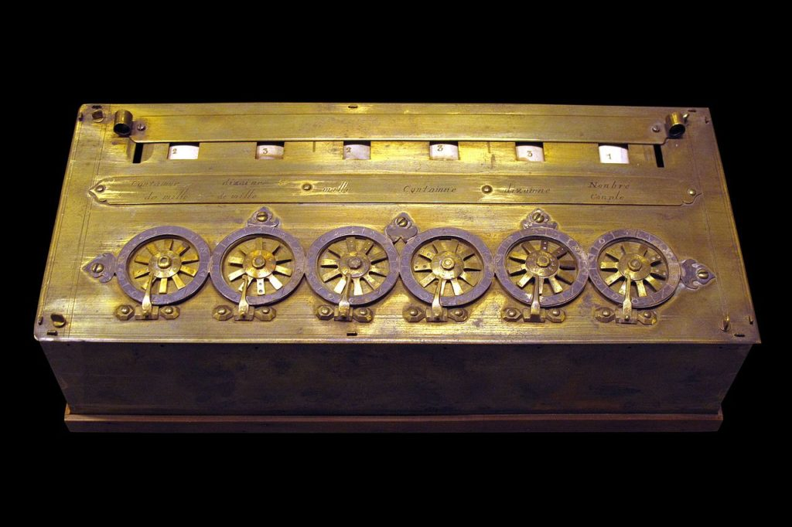

Abaco
El ábaco fue uno de los primeros instrumentos utilizados para realizar cálculos. Se utilizaba hace miles de años y permitió realizar operaciones matemáticas de manera más rápida.
Pasculina

En el siglo XVII, Blaise Pascal creó la Pascalina, una máquina mecánica capaz de realizar sumas y restas. Fue uno de los primeros dispositivos de cálculo automático.
Charles Babbage

En el siglo XIX, Charles Babbage diseñó la Máquina Analítica, un proyecto que incorporaba conceptos similares a los de una computadora moderna.
Ada Lovelace

Ada Lovelace trabajó sobre las ideas de Babbage y escribió lo que se considera uno de los primeros algoritmos destinados a ser procesados por una máquina.